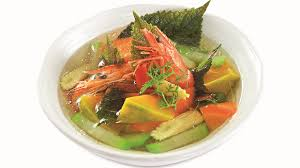

Súp tôm nấu tía tô

- Khẩu phần 4
- Chuẩn bị 10 phút
- Thực hiện 8 phút
Nguyên liệu
- 150g tôm sú nhỏ
- 100g bầu
- 100g bắp non
- 100g bí đỏ
- 50g nấm đông cô
- 20g rau tía tô
- 2 thìa cà phê hạt nêm từ Thịt Thăn, Xương
Ống và Tủy - Bổ sung Vitamin A
Hướng dẫn thực hiện
- Tôm cắt bớt đầu, đuôi, rửa sạch
- Bầu, cà rốt bỏ vỏ, xắt sợi vừa. Bắp non xắt đôi. Bí đỏ xắt miếng vừa ăn.
Nấm đông cô ngâm nở
- Đun sôi 600ml nước, cho tôm vào nấu chín sau đó cho bí đỏ vào. Khi bí
vừa mềm thì cho bắp non, nấm đông cô vào, nêm hạt nêm từ Thịt Thăn,
Xương Ống và Tủy - Bổ sung Vitamin A vào, tắt bếp.